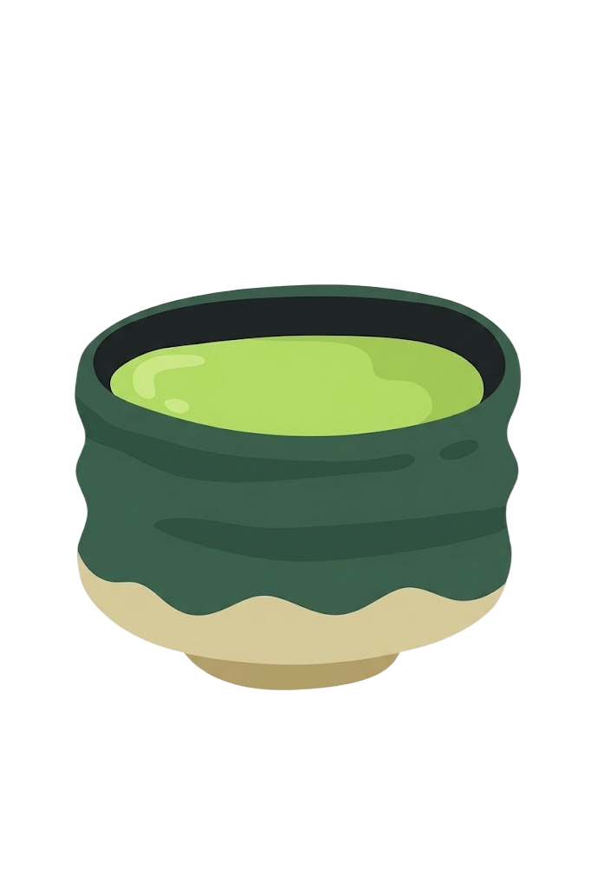
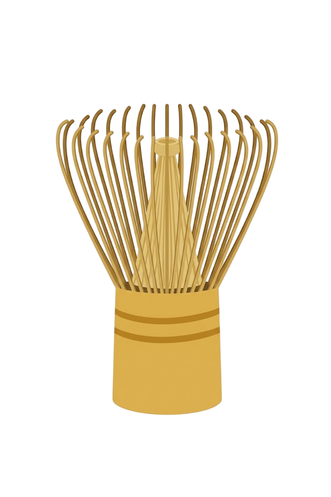
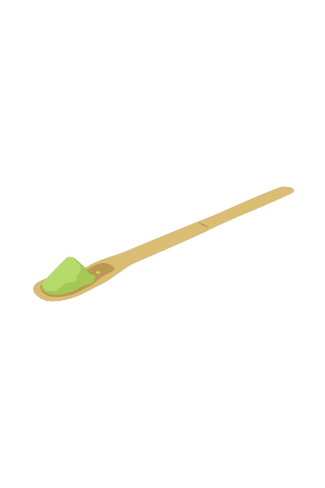
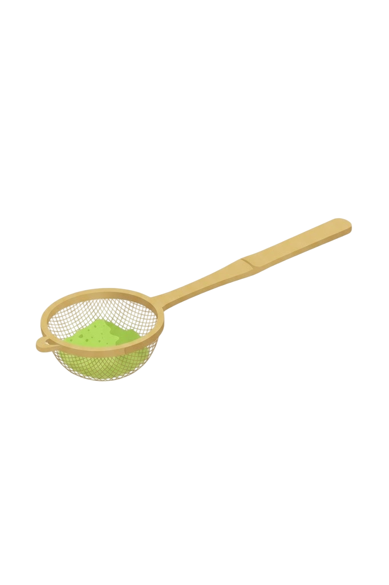

הציוד שצריך :
לפני שמתחילים, כדאי להכין את הכלים שיעזרו לנו להפוך את האבקה לכוס מאצ'ה חלקה וטעימה.

Chawan
קערית רחבה ועמוקה שנוחה לערבוב ולהקצפה

Chasen
המטרפה המסורתית מבמבוק שעוזרת ליצור מרקם חלק וקצף עדין

Chashaku
כפית במבוק קטנה ומדויקת למדידת כמות האבקה

נפה קטנה
השלב הסודי שמונע גושים ועוזר לאבקה להתפזר בצורה אחידה
שלב אחר שלב: איך מכינים את הקסם?
מנפים את האבקה
מניחים את הנפה מעל הקערית ומודדים בעזרת כפית הבמבוק כ־1–2 כפיות גדושות של אבקת מאצ'ה איכותית. מנפים ישירות לתוך הקערית כדי לשבור את כל הגושים.
מוסיפים מים
מוזגים לקערית כ־60–70 מ"ל של מים חמים בטמפרטורה של כ־80 מעלות. המים לא צריכים להיות רותחים. אם המים חמים מדי, הם עלולים לפגוע בטעם העדין של המאצ'ה.
מקציפים ב־W
תופסים את המטרפה ומקציפים בתנועות מהירות בצורת האות W, תוך שמירה על תנועה עדינה. ממשיכים במשך כ־30–45 שניות, עד שנוצר קצף עדין ואחיד על פני הקערית.
מוזגים ונהנים
זהו, המאצ'ה המסורתית שלנו מוכנה!
תכינו מבעוד מועד כוס עם חלב, ותוסיפו את המאצ'ה שהכנתם :)
בקיץ- ניתן להוסיף קרח למשקה מרענן!